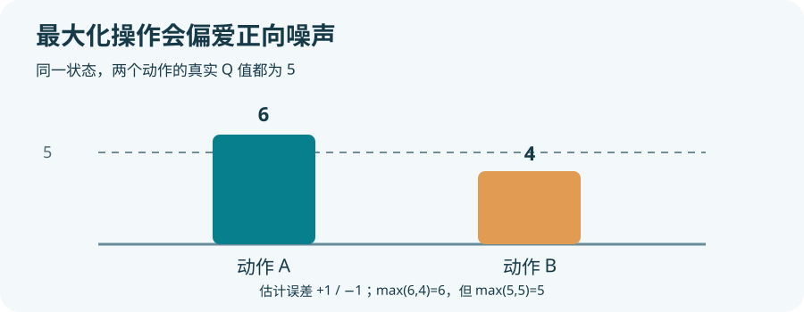
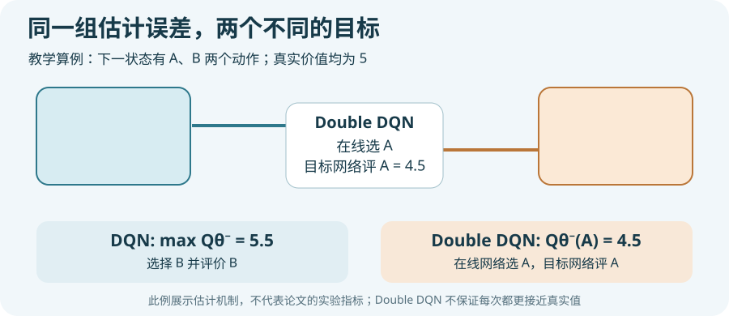

REINFORCEMENT LEARNING · VALUE LEARNING
Understanding Double DQN
不是让两个网络投票，而是让一个网络选动作，另一个网络评估它，降低“挑中了最乐观误差”的问题。
01 · 一个容易忽视的最大化陷阱
想象下一状态有两个动作 A、B，真实价值都为 5。估计网络却把 A 估成 6、B 估成 4。使用最大值的算法会选择 6，于是把估计误差 +1 当成了更好的未来。这不代表所有单次估计都偏高，而是对带噪声估计取最大值会倾向挑中正向误差。DQN 的目标值中正好有这个最大化操作。

在独立、零均值估计误差的典型情形下，最大化的期望通常不小于真实最大值；但单个样本仍可能低估。偏差大小取决于噪声相关性、动作数量及估计器结构。
02 · 先理解 DQN 的 Bellman 目标
从经验回放中抽取一条转移 (s,a,r,s′,d)。s 是当前状态，a 是当前动作，r 是即时奖励，s′ 是下一状态，d 为终止标记（终止时 d=1）。γ∈[0,1) 是折扣系数。在线网络 Qθ 用参数 θ 学习动作价值，目标网络 Qθ⁻ 的参数 θ⁻ 周期性同步，以缓和目标漂移。
关键是：DQN 使用同一个目标网络的输出，既决定哪个 a′ 最大，也取该动作的数值。虽然目标网络与在线网络分开了，但在这一目标计算内部，选择与评价仍然耦合。
03 · Double DQN 只改变目标计算的哪一步？
Double DQN 保留 DQN 的 replay buffer、在线网络、目标网络与 TD 误差训练，但把下一状态的动作选择交给在线网络，动作评价交给目标网络。目标网络不再自己选出它认为最大的动作。
a* 表示由在线网络在 s′ 中选出的动作。目标值 yDDQN 再使用目标网络 Qθ⁻ 评价这一动作。两个网络的估计误差并非必然独立，因此这种设计减轻而非数学上保证彻底消除偏差。论文的 Deep Double Q-learning 是对深度 DQN 的特定改造，不应与表格型 Double Q-learning 的两张 Q 表更新规则混为一谈。

04 · 逐步计算一个具体例子
设 γ=0.9，r=1，d=0；下一状态的在线估计为 A=6、B=4，而目标估计为 A=4.5、B=5.5。DQN 从目标网络中直接取最大值 5.5，因此 yDQN=1+0.9×5.5=5.95。Double DQN 先用在线网络选出 A，再从目标网络读取 A=4.5，因此 yDDQN=1+0.9×4.5=5.05。
假定两个动作真实价值都为 5，那么这次理想的单步 bootstrap 目标是 1+0.9×5=5.5：DQN 偏高 0.45，Double DQN 偏低 0.45。这正说明 Double DQN 不保证每次都更准确；它主要针对系统性的最大化过估计。
如果 d=1，则无论两个网络如何预测下一状态，两个目标都等于即时奖励 r，因为终止状态不再进行 bootstrap。
05 · 训练时的损失与伪代码
L 是 TD 误差平方的期望；期望来自经验回放采样。实际实现常采用论文/代码规定的损失和优化细节，目标值应停止梯度传播。伪代码如下，仅呈现核心更新而非完整 Atari 复现：
for s, a, r, next_s, done in replay_batch:
selected = argmax(online_Q(next_s)) # 选动作
evaluated = target_Q(next_s)[selected] # 评动作
y = r + gamma * (1 - done) * evaluated
loss += (stop_gradient(y) - online_Q(s)[a]) ** 2
optimizer_step(loss)
periodically_copy(online_Q, target_Q)θ 是在线网络可训练参数，θ⁻ 是目标网络参数；replay buffer 存储历史转移，周期性复制参数与采样分布的选择都影响稳定性。Double DQN 的主要创新是目标计算，而不是新发明 replay 或目标网络。
06 · 原论文证据、优势和局限
van Hasselt、Guez 和 Silver 在 AAAI 2016 论文中分析了 Atari 2600 游戏中的 DQN 过估计，并报告 Double DQN 在若干游戏上改善表现。这里不编造游戏得分、置信区间或平均提升幅度；具体数值应以论文实验表格、游戏集合和基线协议为准。AAAI 官方论文 与 作者预印本 可用于交叉核对。
实践中，Double DQN 是对离散动作 DQN 基线相对低成本的改进：无需新增第三个网络，只需改变下一状态目标动作的选择来源。应在相同环境、随机种子和计算预算下评估其实际效果。
原始资料与相关阅读
- van Hasselt, Guez & Silver, Deep Reinforcement Learning with Double Q-learning, AAAI 2016（同行评审会议论文，正式出版）。
- arXiv:1509.06461（2015 年首发预印本，2016 年会议论文）。
- Q-learning：先理解 Bellman 最大化。
- DQN：经验回放与目标网络。
- C51：从标量价值进一步走向回报分布。